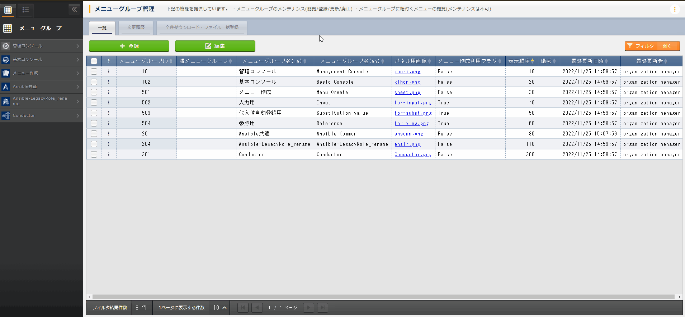
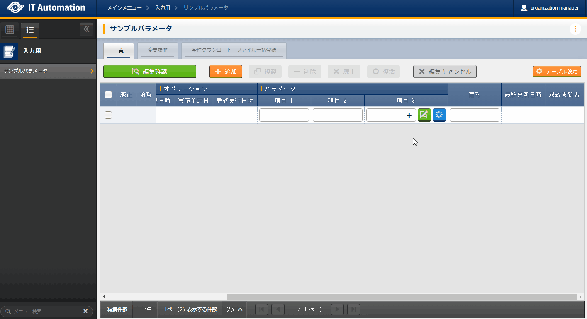
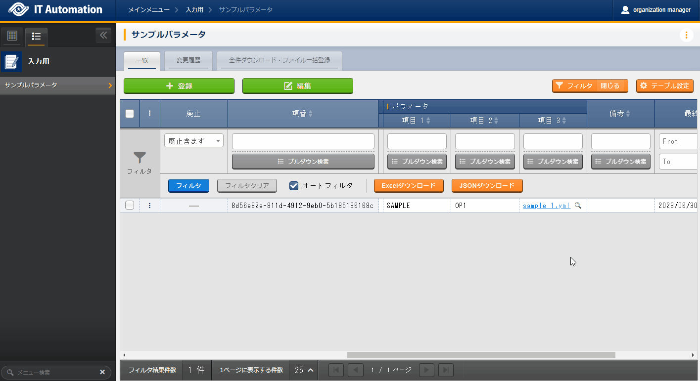
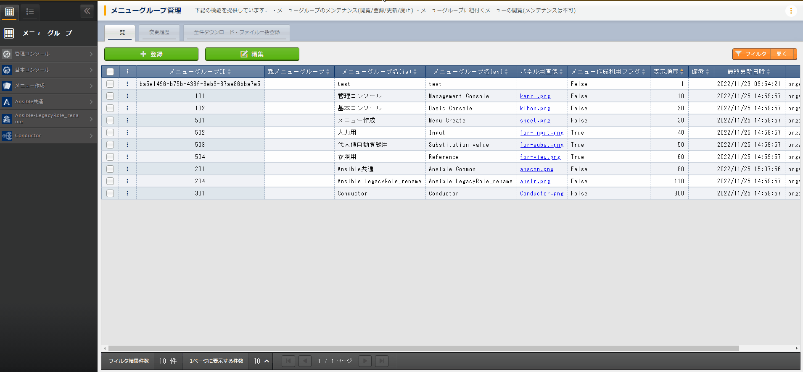
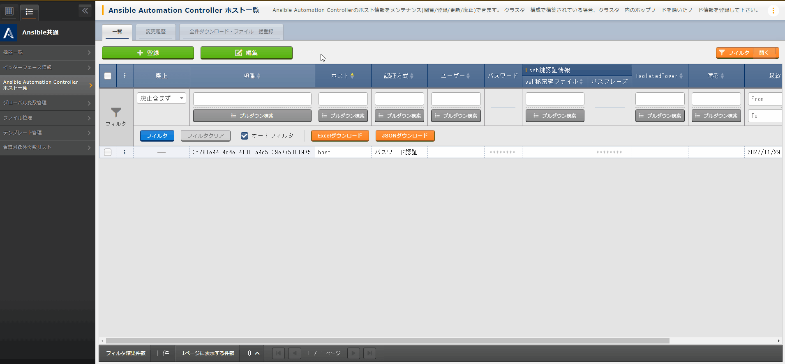

4. Common operations¶
4.1. Introduction¶
4.2. Overview¶
This section explains the shared parts found in ITA menus and how to use them.
4.3. Page description¶
4.3.1. Page structure¶

図 4.1 Page structure¶
No. |
Page name |
Description |
|---|---|---|
1 |
Menu name |
Displays the name of the current menu.
Click ︙ to display the menu description.
|
2 |
Menu |
Displays menu groups that can be operated and/or viewed.
It will also display the menus that can be operated and/or viewed in the current menu group.
|
3 |
Submenu |
Subsection of a menu where the user can register and configure items to menus.
※More information is written further down.
|
4 |
Workspace information |
Displays the current workspace and workspaces the current user has access to.
Clicking it will provide the user access to the following operations.
・Change workspace
・Move to the workspace list page
|
5 |
Login information |
Displays the name of the account curently being used.
Clicking it will provide the user access to the following operations.
・Check current roles
・Page settings
・Check the version of the ITA system and the different drivers.
・Log out
|
4.4. Common menu operations¶
4.4.1. List tab¶
- RegisterRegisters a new item to the menu.The contents of the item changes depending on the menu. For more informatoin, see the corresponding manuals.For bulk registration using Excel or JSON files, see "Download all items/ File bulk registration".
 Clicking the Registerin the upper part of the "list" tab moves the user to the Register/Edit page
Input the required information and click the Confirm editsbutton to display the Confirm edited contents page.
Click the Confirm editsbutton to update the item.
注釈
Registration button- AddAdds a new record for registering data.Use when registering multiple items at once.
- DeleteDeletes records with their checkbox ticked.
注釈
Pulldown menu itemsAn input item for registering and updating. Items that can be selected from a pulldown selection have the following features.
- Displays a search window.Users can input words and phrases in order to narrow down the items.When searching capitalized and non-capitalized letters as well as full width and half width letters will be searched as the same.
- Displays selection items.
Tip
File upload itemsAn input item for registering and updating. File upload items have the following features. - + :Allows users to select a file and upload it.
- :Can create and edit text files.When in an editable state, the following becomes available.・Update :Saves the edited contents in the file (It will not be saved to the record).・Download :Downloads the edited file.
- :Allows users to delete the file. After pressed and after , the item will also be deleted from the record.
- The user can configure prohibited file types by changing the "FORBIDDEN_UPLOAD" value in in "Management console - System settings".
警告
Do note that allowing more file types that can be uploaded might open up security holes.
- Display filterSpecifies search conditions used to display items registered in the menu.Search conditions and search items differ depending on the menu. This section only explains the common functions.Clicking the Filter|Open/Close button within the "List" tab hides or displays the menu.

- Discard column"Do not include deleted data" is set to it by default.The user can change to "All records" and "Deleted data only" to display their desired records.One of them must be selected.
- Search conditionsSpecifies conditions that will be used when searching.・In order to specify conditions for multiple items, search with an "AND" condition.・The user can filter with either "fuzzy search" or "pulldown search" when searching with string specification.・When filtering with "fuzzy search" and "pulldown search" for the same item, it will search with an "OR" condition.・Searching for file uploads will only search for the file name.・For items that can have Integer, float、Date、Date/time input to them, the user can filter with "Above", "Below" and "Within".
- Auto filterTicking the Auto-filter checkbox automaticall displays a list that fits the selected filter conditions.The user can set the wether to tick or untick the checkbox in the Management console "Menu management"'s Auto filter check.
- Column description (Description)Hovering the cursor over the item displays a popup window containing a description for the corresponding item.
- FilterSelect search conditions from pulldown menu or manual input and press the Enter key or click the Filter button to display registered information.
- Excel downloadAllows users to download all files that meets the search conditions in an Excel format.
- JSON download/JSON download (Without file)Allows users to download all files that meets the search conditions in an JSON format.If a file upload item is included, the file data will be downloaded in base64 format.※If JSON download（without file） is selected, the file data will not be downloaded.
注釈
Downloaded excel type and JSON files types from the display filter can be used in "Download all items/ File bulk registration".Tip
File upload itemsItems that can have files uploaded to them in the list have the following functions. - File name :Allows users to download the file by clicking the file name link.
- :Displays textfile as a preview.When in Preview mode, the following will be available.・Download :Downloads the file.
- EditUpdate registered items.The edit contents differs depending on the menu. For more information, see the corresponding manuals.
 - Click the target item's … > Editbutton to move to the Register/Edit page.The user can also tick the target item's checkbox and click the Editbutton in the upper part of the "List" tab.Clicking the Editbutton without ticking any checkbox will display and allow the user to edit all items.
- Input the new information and click the Editbutton in the upper part of the "List" tab to display the Edit confirmation page.
- Click the Confirm editto update the target.
注釈
Buttons when editing- AddAdds a new record for registering data.Use when registering multiple items at once.
- DeleteDeletes records with their checkbox ticked.
- DiscardChanges the Discard flag to "True" for checked records.The item will be discarded after being updated.


- DuplicateUsers can reuse registered item to register new ones.
- Click the target item's … > Duplicatebutton to move to the register/edit page.The user can also tick the target item's checkbox and click the Editbutton in the upper part of the "List" tab.After having moved to the Register/edit page, click the Duplicatebutton.
- Displays a registration records that contains the item values of the target item.
 警告
- The item will not be duplicated if the target item is a Password item.
- Table settingsUsers can change the table settings.The settings are saved on the server, meaning that the changed settings will be displayed even if the user is acecssing from a different environment, browser or even device.
- Shared settings: Settings that applies to the shared submenu parts in all menus.
- Individual settings: Setting that applies to only the configured menu. If the items have "Shared settings" selected, the selected items in the shared settings will be applied.
図 4.2 Table_settings_Individual_settings¶
図 4.3 Table_settings_Shared_settings¶
Item
|
Description
|
Setting value
|
Remarks
|
|---|---|---|---|
Item display direction
|
Configure the item display direction.
|
Select one of the following.
・Common settings
・Vertical
・Horizontal
|
|
Filter display position
|
Configure the filter's display position.
If the item display direction is set to vertical, it will be set to Outside.
|
Select one of the following.
・Common settings
・Inside
・Outside
|
|
Item menu display
|
Configure the item menu's display method.
|
Select one of the following.
・Common settings
・Shortened
・Display
|
|
Display/Hide item
|
Configure whether to hide or display items.
|
Select the target item.
|
Item
|
Description
|
Setting value
|
Remarks
|
|---|---|---|---|
Item display direction
|
Configure the item display direction.
|
Select one of the following.
・Vertical
・Horizontal
|
|
Filter display position
|
Confiure the filter's display position.
If the item display direction is set to vertical, it will be set to Outside.
|
Select one of the following.
・Inside
・Outside
|
|
Item menu display
|
Configure the item menu display method.
|
Select one of the following.
・Shortened
・Display
|
注釈
図 4.4 Menu group( item display direction:Vertical)¶
図 4.5 Menu group(Item display direction:Horizontal)¶
図 4.6 Menu group(Filter display position:Inside)¶
図 4.7 Menu group(Filter display position:Outside)¶
図 4.8 Menu group(Item menu display:shortened)¶
図 4.9 Menu group(Item menu display:Display)¶
4.4.2. Change history tab¶
- Checking change history
- By specifying the menu's main key, the user can display the change history for items that supports it.They can also click the … > History button in the "list" tab of the target item to see the change history.
- The change history is sorted by new-old, and changes that has happened since last time will be colored in orange letters.

- Change history for pulldown selectionsIf the "Pulldown selection" reference source has been changed, the reference value will also be automatically changed."Change history" displays the value when the value has been edited (registered/updated/discarded/restored).The following uses examples to explain.Example: Parameter sheet "Param001"'s item "ParamB) references "Master001"'s "Master" item.
- This example assumes that the following parameter sheet and data sheet has been created in the "Parameter sheet creation" menu group> "Define/Create parameter sheets" menu.
- Data sheet "Master001"

図 4.10 「Data sheet created in the "Define/Create parameter sheet" menu¶
- Parameter sheet "Param001"

- In the Input menu group>Master001 menu, register the value "mas1-1" to the "Master" parameter.
- In the Input menu group>Param001 menu, register 1 item.
- In the Input menu group>Master001 menu, edit the "Master" parameter's value to "mas1-2".
- In the Input menu group>Master001 menu, edit the "Master" parameter's value to "mas1-3".
- In the Input menu group>Param001 menu, edit the earlier registered target, "ParamA", and update.

- In the Input menu group>Master001 menu, edit the "Master" parameter's value to "mas1-4".
- In the Input menu group>Master001 menu, edit the "Master" parameter's value to "mas1-5".
- In the Input menu group>Param001 menu, edit the earlier registered target, "ParamA", and update.
- The following images depicts what results will be output.

図 4.11 Data sheet "Master001" change history¶

図 4.12 Parameter sheet "Param001" change history¶


{kind=link}
{kind=link}
{kind=link}
{kind=link}
{kind=link}
{kind=link}
{kind=link}
{kind=link}
{kind=link}
{kind=link}
{kind=link}
{kind=link}
4.4.3. Download all items/ File bulk registration¶
{kind=link}
- Downloads the files that are currently visible.
- In order to register/discard/restore registered information, click the Download all items(Excel)and download the file.
- In order to register new items, click the Download file for new registrations(Excel) and download the file.
- Edit the downloaded file and save.The edit contents differs depending on the menu. See the corresponding manuals for more information.
- Click the File bulk registrationbutton for the right format, select the target file and click the Start bulk registrationbutton.
警告
{kind=link}
- Downloads the files that are currently visible.
- In order to register/discard/restore registered information, click the Download all items(JSON)and download the file.
- In order to register new items, click the Download all items(JSON) and download the file.
- Edit the downloaded file and save.The edit contents differs depending on the menu. See the corresponding manuals for more information.
- Click the File bulk registrationbutton for the right format, select the target file and click the Start bulk registrationbutton.